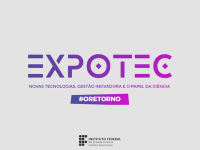

Evento de divulgação científica e tecnológica

A Feira de Tecnologia do IFRN é um espaço de inovação que conecta o conhecimento dos nossos estudantes com os desafios do mercado e da sociedade. Nosso objetivo é incentivar a criatividade e o desenvolvimento científico por meio de projetos práticos e tecnológicos. O evento reúne soluções de vanguarda focadas em quatro grandes áreas:
Muito mais que uma exposição, a feira é um ponto de encontro para troca de experiências, networking e empreendedorismo, preparando nossos alunos para liderar o futuro digital.
Data: 13/07
Local: Auditório
Data: 14/07
Local: Laboratório 1
Data: 15/07
Local: Auditório
Informações: guilherme.leal@ifrn.edu.br
Telefone: (84) 88888-8888